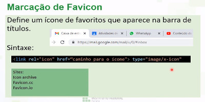

A imagem é um dos diversos itens que a linguagem de hipermídia permite, acima está um slide detalhado sobre as informação do que é uma imagem, logo abaixo deste paragrafo tem um exemplo de imagem inserida no documento HTML.
A imagem a baixo é o trecho de código usado para declarar uma imagem, um texto e outra imagem.
Sendo o <img src...> para declarar a imagem e o <p> ... </p> para declarar um paragrafo.
Formato
Cada tipo de formato tem uma compactação diferente, isto muda tanto a qualidade da imagem quanto seu tamanho. Os mais utilizados são o JPEG e o PNG, o JPEG foi criado nos anos 80 e possui o fundo, ele tem uma qualidade inferior ao PNG, porem, necessita de menos espaço para ser alocada, o PNG já vem com fundo transparente e foi desenvolvido pela W3C
OBS.: (Os mais utilizados para a web são o .SVG e o .ICO)
Para se editar imagens é utilizado editores como o GIMP ou o PhotoShop, logo a baixo está uma imagem de como é o GIMP, o meu editor atual.
Licença de imagem
É obvio mas vale ressaltar, sempre verifique se a imagem tem ou não direitos autorais, NÃO pegue uma imagem que não é sua sem informar a fonte ou o dono da imagem.
Na imagem acima, tem alguns repositórios onde as imagens são de licença aberta, vale ressaltar que a imagem acima é de autoria do Professor Francis.
Marcação de imagem
A sintaxe é simples, o SRC é a localização da imagem, ALT a descrição caso a imagem seja impossibilitada de ser carregada no site, HEIGHT é a altura e o WIDTH a largura. Veja um exemplo a seguir.
Um ponto importante para salientar é sempre prestar atenção no tamanho da imagem, eu sugiro sempre utilizar o formato JPEG com 90% de qualidade, assim fica perfeito, todo meu arquivo de imagens até agora deu apenas 346,5 kB.
2º slide sobre marcação de imagem
A sintaxe acima é apenas para ter uma melhor semântica e uma legenda, fora isto não muda nada da primeira forma, eu sinceramente não sei dizer se as linhas e tempo adicional valem a pena para se obter um documento mais "bonito", porem, se a pessoa tem tempo e paciência, seria melhor utilizar o figure e figcaption.
OBS.: (para acrescentar uma imagem da internet, em vez da localização da imagem, você coloca o link da imagem que está na internet)
Icone

Esta é a sintaxe para se fazer um icone para o site, o REL é o tipo, HREF o caminho e o TYPE o tipo do arquivo, que no caso é um icone.
No slide também tem alguns sites que permitem a fabricação gratuita de ícones.